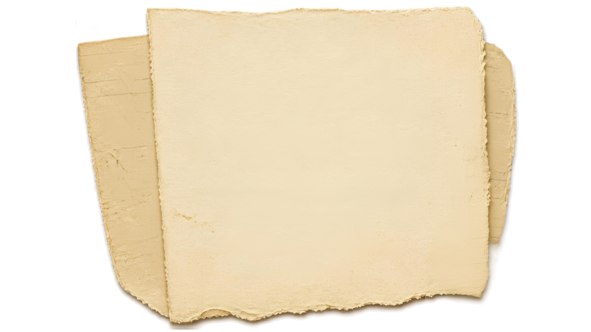

Open this from disk and compare the three. The middle panel is the polygon that was in the page. The right panel is what replaced it. Both are the same rectangle, the same cream, and the same angle, so the edge is the only thing that differs.
Pela's photograph. No two teeth alike, some deep, some barely there, and the sheet does not lie flat.

Every tooth the same depth and the same spacing, because each one was typed. This is the thing that read as decorative trim.
Fractal noise displacing the edge. No period, so no repeat. The shadow is a drop-shadow after the displacement, so it follows the ragged silhouette rather than the original rectangle.
The middle one is what is in the page now. The other two are here only so the direction is visible. Same seed on all three, so the tear is the same tear at three depths rather than three different tears.
scale 15, the previous depth
scale 18, live
scale 22, if 18 is still too tame
old polygon
turbulence
What to look for, in this order:
If it is too ragged or too tame, the number to change is scale. There are three of them in index.html, one per paper layer: cream 18, kraft 16, sage 20. They are kept in that relationship on purpose, the top sheet tearing hardest, so raising one means raising all three by the same ratio. Higher tears deeper. baseFrequency controls how often the edge wanders, and lower is slower and longer.
If the generated edge never convinces, the fallback is your photograph as a mask on the top cream layer only, leaving the two behind it generated so they cannot repeat it. One thing to know before choosing that: the photo would need its white background knocked out to a real transparency first. A mask reads the alpha channel, and a sheet of cream paper on white has no alpha to read, so as it stands it would mask nothing.